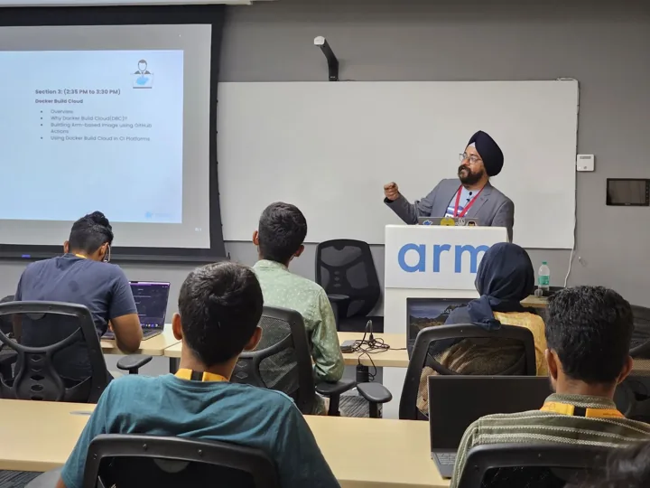

↗ View gallery · 06Inside the Arm developer ecosystem
Arm Bangalore Office · Bengaluru
A day of workshops, lightning talks and conversations about building software for Arm platforms.
Explore the story
The work
The event covered Docker Build Cloud for Arm, Linux-capable Arm laptops and IoT development, with sessions from the Arm developer community.
The contribution
Connected with fellow ambassadors and industry developers around the practical challenges of software and hardware development.
Link to this story